Notes on GitHub
Table of Contents
Using Terminal Commands
To change directories in the command line, we use cd.
cd: change directory
In the command line, type ‘cd’ followed by the path to a directory. For example, if I want to go to a repo called StudentOOP located in Documents/GitHub, I would type:
cd Documents/GitHub/StudentOOP
To see a list of all files in your current directory, type in
ls
To see more information about each file, type
ls -l
Cloning a GitHub Repo using the Terminal
-
Go to the desired repo on Github
-
Press the green button and copy the link
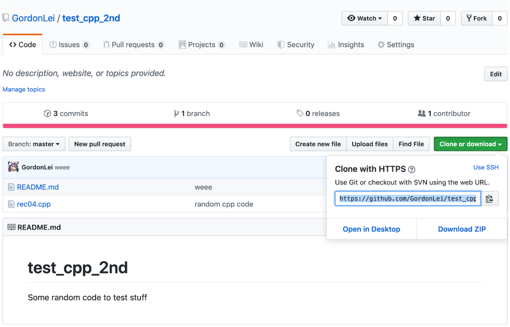
-
Open a terminal and cd into the level that you want to put your repo in.
-
Type in: git clone PUT_THE_LINK_HERE
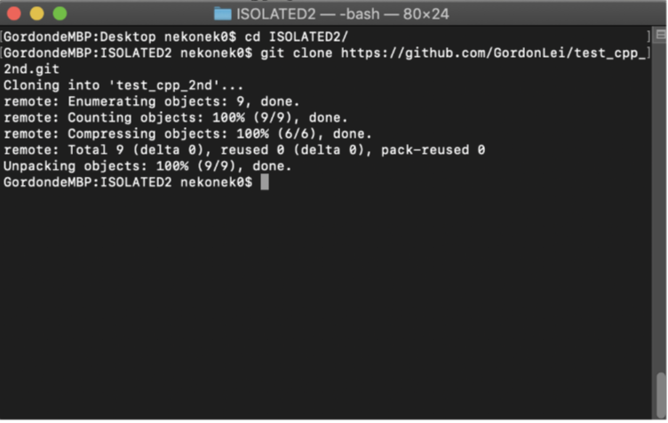
-
Now cd into the Git repo and you have successfully cloned the repo.
Pulling from a GitHub Repo using the Terminal
(used if you have an outdated version of a GitHub repository)
-
cd into the local repository on your command line (for mac users, it’s the terminal)
-
Type: git pull or git pull origin master
-
If your local repo is behind the one on GitHub, it will update the local repo without you having to clone the repo again.
-
***Since you will be the only one changing your repo in this class, you shouldn’t have to pull if you only commit and push from your computer using a command line or though GitHub Desktop. However, it is good practice to pull before committing and pushing, as this is very important when working in a repo with multiple contributors.
Compiling and Running on the Terminal
-
cd into the local repository of your project
-
We will be using the makefile to run our programs. It will be different depending on what the rule is called, but will be in the form of make RULE_NAME . For example, for the first assignment, typing make hello into the Terminal will compile the code. It would generate an executable file “test_hello” under the tests folder. In this class, all the executable files will be automatically created under the tests folder when you use make to compile the code.
-
Run this executable file by typing ./tests/test_hello into the terminal window. If your current directory is tests, you just type ./test_hello to run the program.
-
You will see “hello world!” in the command window.
Committing and Pushing to GitHub on the Terminal
-
cd into the local repository on your command line.
-
If your local repository is outdated, do a git pull
-
If there are new files you want to add to the GitHub repository, you must let GitHub know you want to track them. Do this by typing
git add FILE NAME
on the command line. DO NOT ADD FILES YOU DON’T WANT TO BE PUSHED TO GITHUB!!!
-
To commit all the changes you’ve made to tracked files, type:
git commit -a -m “COMMIT MESSAGE”
-
The commit message should be a message that tells people something about the changes you’ve made.
-
After committing your changes, type:
git push
or
git push origin master
-
***Sometimes, when you run git push, you may be prompted to enter your GitHub username and password. Notice when you type your password, it does not show up on the screen. That’s for privacy purposes. Just finish typing your password and hit enter.
-
Note: The makefile provides a shortcut to do the step 4 and 5 (commit the changes and push to remote repo). You could type the command “make prod” into the terminal, which runs those commands for you.
Cloning a GitHub repo using the GitHub Desktop App
-
Login to your Github account through the Desktop App.
-
Click the repo you want to clone and press “Clone”
-
If you cannot find the repo, find the option to clone a repo.
On Mac it is under File then Clone Repository.
Paste the URL onto the “Repository URL” field.
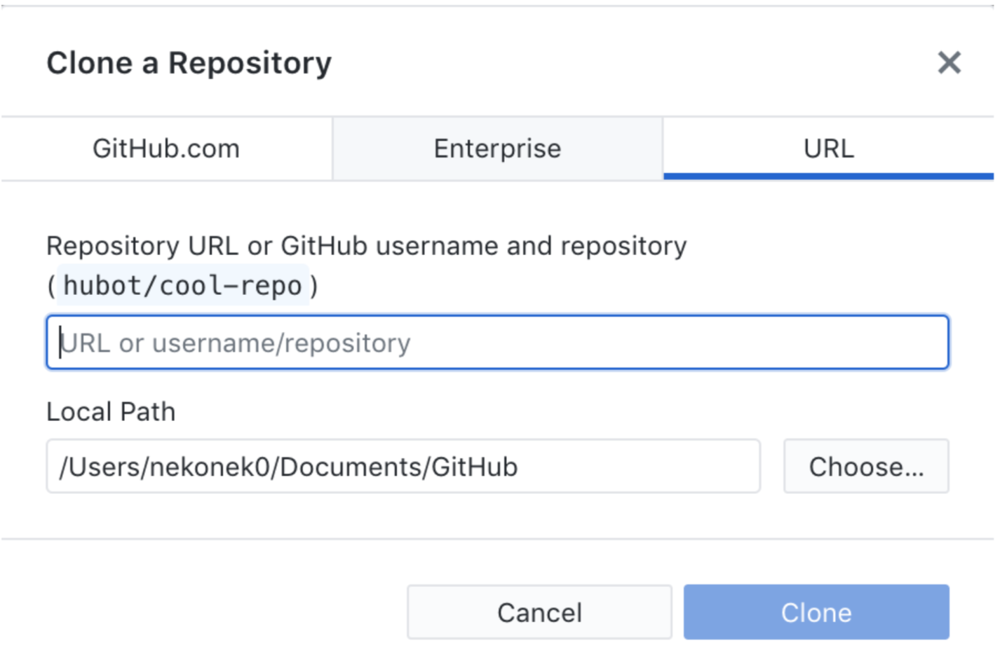
-
Your cloned repo will most likely be under the Documents folder, then under the Github folder from there (assuming you do not change the local path).
Pulling from a GitHub Repo using the GitHub Desktop App
-
Open you local repo on GitHub Desktop
-
On the bar at the top, there should be a box that says “Fetch origin”. Click inside the box, and it should update your local repo for you.
Committing and Pushing to a GitHub Repo using the GitHub Desktop App
-
Open you local repo on GitHub Desktop
-
If you made changes to a file, it should show up on the left panel.
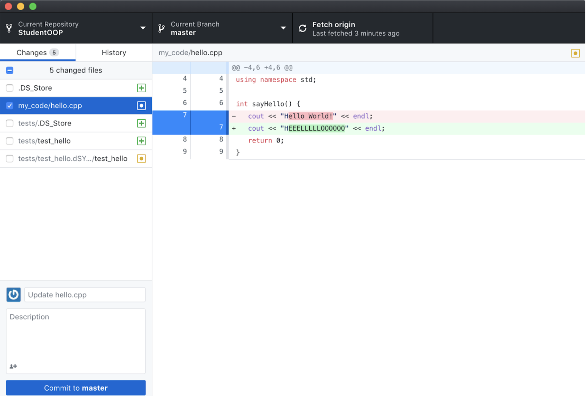
-
REMEMBER TO UNCHECK THE BOXES FOR THE FILES YOU DON’T WANT TO COMMIT TO THE GITHUB REPO!!! In the example above, I only want the changes I did to hello.cpp to be pushed onto GitHub, so it is the only file that is checked.
-
After commiting, the tab on the top that said ‘Fetch origin’ should now say ‘Push origin’. Click inside that box again to push your changes to GitHub.
Opening an Xcode Project on a GitHub Repo
-
Clone the desired Git repository
-
Open Xcode and create a new project within the same place / level as the Git repo.
To do this, open Xcode and press “Create a new Xcode Project.” If you do not see this option, go under File → New → Project
-
Go under the macOS tab and select the option for “Command Line Tool”. Press “Next”.
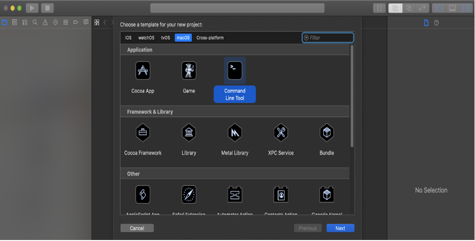
-
Give the project a name and put the project in the same level / directory as the Git repo. The Xcode project should open up. If not, find and go inside the project folder and open the “.xcodeproj” file
-
Right click the folder on the left bar with the same name as the project and delete it (move to trash).
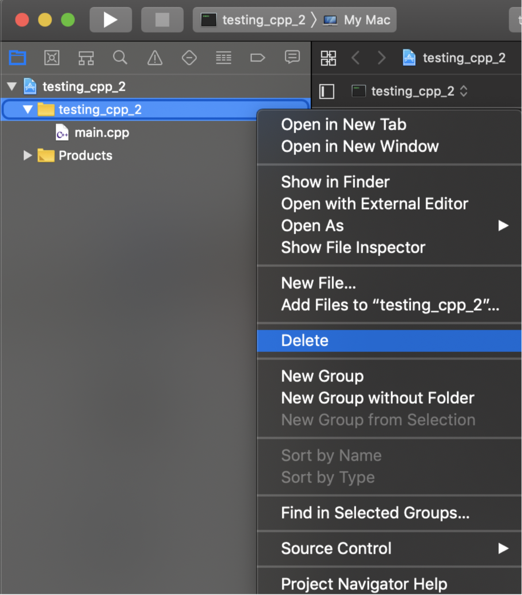
-
Click on the xcode project file on the left panel. It has the logo for Xcode (the blue paper with the A, should be the first file there). Make sure it is highlighted before moving to the next step.
-
Go to the bottom left corner and press the “+” symbol and select the option to add files.
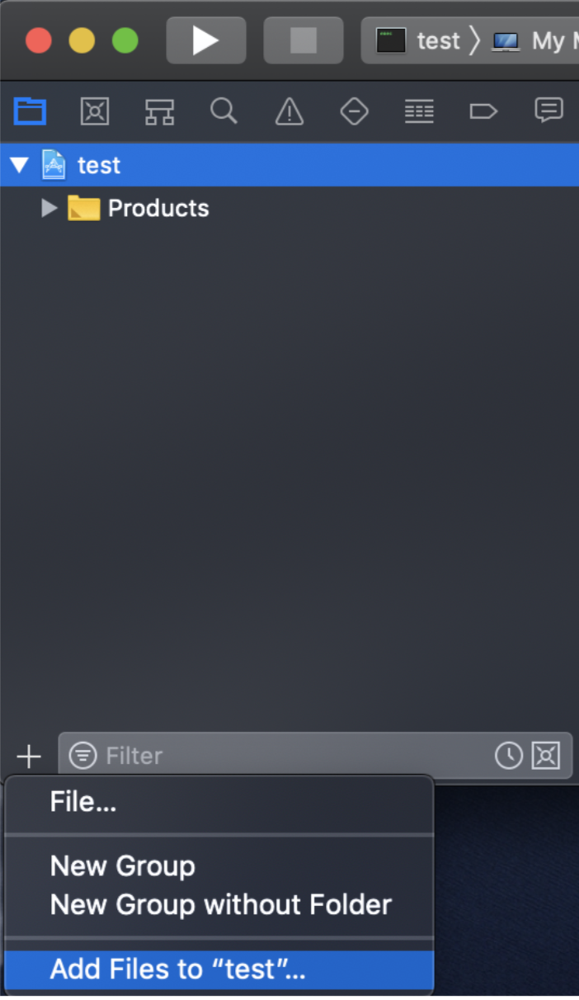
-
Select on the GitHub repo you want to work in. Make sure the option to “copy files if needed” is not checked and the option for “create group” is checked. Then click add.
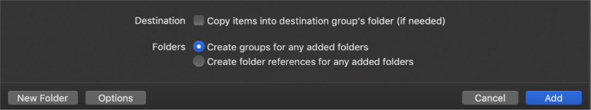
-
Now your Xcode project is linked with your Git repo. Changing a file under the “.xcodeproj” file symbol will also modify the corresponding file in your local Git repo (which you want to happen)
Running Git Commands on Xcode
In Xcode version 9.0 and above, there is an option to run simple git commands within Xcode. First, you must connect Xcode with a GitHub account. There are two ways you can do this; in one way you login through the settings in Xcode, the other way occurs when you try to use the git commands and a login box is prompted to you.
Logging in Through Settings:
-
Open Xcode and under the Xcode tab, press the preferences option.
-
From there press the Accounts tab. It should look something like this:
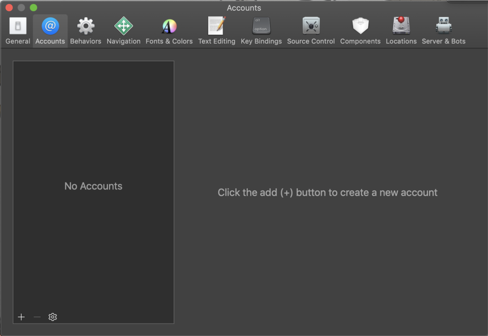
-
Press the + sign on the bottom left corner and select the option for “Github” (NOT GITHUB ENTERPRISE)
-
Login with your GitHub account and now you can use git commands through the tabs on Xcode
Logging in Through The Prompt:
-
Try to do a git command under the Source Control tab and they’ll prompt you to login if you have not done so already.
Using Git Commands in Xcode:
Make sure you are doing this in a xcode project that has a Git repo linked to it (by linked I mean you did the steps under “
Opening an Xcode Project on a GitHub Repo
”) if you are trying to push / commit to an existing repo.
-
Under the “Source Control” tab, it lists some git commands you can use in Xcode.
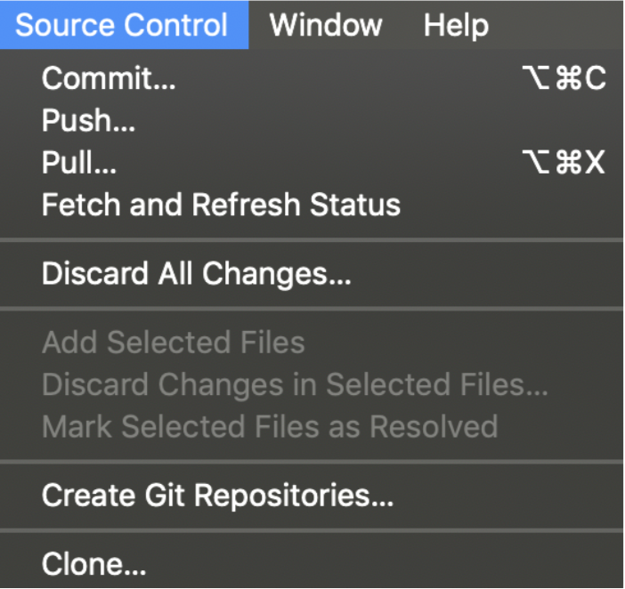
-
Make sure to pull to get any new changes from your Git repo that your local copy of the repo may not have.
-
Make sure to commit before you push.
After pressing the Commit option, make sure that only the files you want to get pushed into the online Git repo gets checked in the left-side bar (EX. you don’t want to check off DS_STORE files since you do not need them in your repo + you do not want your executables in the Git Repo).
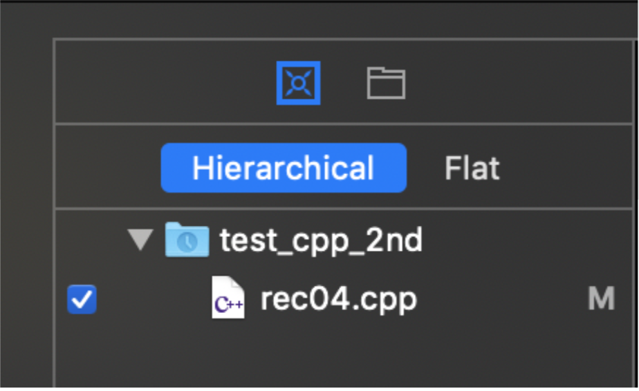
Using GitHub on Visual Studio
-
There is a github extension in visual studios.
-
The information for it is here .
-
After you download the extension, you should be able to log in to GitHub on Visual Studios. After login in, you should be able to clone, edit, and push to the GitHub repo.